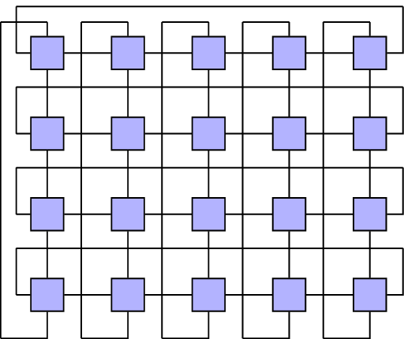

\documentclass[tikz]{standalone}
\usetikzlibrary{arrows,chains,positioning,scopes,quotes,bending,calc,intersections}
\tikzset{
block/.style={draw,minimum width=1em,minimum height=1em,align=center,fill=blue!30},
arrow/.style={->},
line/.style={-}
}
\begin{document}
\begin{tikzpicture}[>=stealth',node distance=0.5cm]
% Creating rows of blocks
{[start chain]
\node[on chain] (s0) {};
\node[on chain] (s1) {};
\node[on chain] (s2) {};
\node[on chain] (s3) {};
\node[on chain] (s4) {};
}
{[start chain]
\node[block,on chain, below = 0.15 cm of s0] (A0) {};
\node[block,on chain, join =by {line}] (A1) {};
\node[block,on chain, join =by {line}] (A2) {};
\node[block,on chain, join =by {line}] (A3) {};
\node[block,on chain, join =by {line}] (A4) {};
}
{[start chain]
\node[block,on chain, below = of A0] (B0) {};
\node[block,on chain, join =by {line}] (B1) {};
\node[block,on chain, join =by {line}] (B2) {};
\node[block,on chain, join =by {line}] (B3) {};
\node[block,on chain, join =by {line}] (B4) {};
}
{[start chain]
\node[block,on chain, below = of B0] (C0) {};
\node[block,on chain, join =by {line}] (C1) {};
\node[block,on chain, join =by {line}] (C2) {};
\node[block,on chain, join =by {line}] (C3) {};
\node[block,on chain, join =by {line}] (C4) {};
}
{[start chain]
\node[block,on chain, below = of C0] (D0) {};
\node[block,on chain, join =by {line}] (D1) {};
\node[block,on chain, join =by {line}] (D2) {};
\node[block,on chain, join =by {line}] (D3) {};
\node[block,on chain, join =by {line}] (D4) {};
}
% {[start chain]
% \node[block,on chain, below = of D0] (E0) {};
% \node[block,on chain, join =by {line}] (E1) {};
% \node[block,on chain, join =by {line}] (E2) {};
% \node[block,on chain, join =by {line}] (E3) {};
% \node[block,on chain, join =by {line}] (E4) {};
% }
% Drawing vertical lines
\draw (A0) -- (B0) -- (C0) -- (D0); % -- (E0);
\draw (A1) -- (B1) -- (C1) -- (D1); % -- (E1);
\draw (A2) -- (B2) -- (C2) -- (D2); % -- (E2);
\draw (A3) -- (B3) -- (C3) -- (D3); % -- (E3);
\draw (A4) -- (B4) -- (C4) -- (D4); % -- (E4);
% Drawing loop backs horizontal
\draw (A0.west) -- ($(A0.west) - (0.15, 0)$);
\draw ($(A0.west) - (0.15, 0)$) -- ($(A0.west) - (0.15, 0)+(0,0.5)$);
\draw ($(A0.west) - (0.15, 0)+(0,0.5)$) -- ($(A0.west) +(4,0.5)$);
\draw ($(A0.west) +(4,0.5)$) |- (A4.east);
% \draw (A0.north) |- (s2.north east) -| (A4.north);
% B row
\draw (B0.west) -- ($(B0.west) - (0.15, 0)$);
\draw ($(B0.west) - (0.15, 0)$) -- ($(B0.west) - (0.15, 0)+(0,0.5)$);
\draw ($(B0.west) - (0.15, 0)+(0,0.5)$) -- ($(B0.west) +(4,0.5)$);
\draw ($(B0.west) +(4,0.5)$) |- (B4.east);
% C row
\draw (C0.west) -- ($(C0.west) - (0.15, 0)$);
\draw ($(C0.west) - (0.15, 0)$) -- ($(C0.west) - (0.15, 0)+(0,0.5)$);
\draw ($(C0.west) - (0.15, 0)+(0,0.5)$) -- ($(C0.west) +(4,0.5)$);
\draw ($(C0.west) +(4,0.5)$) |- (C4.east);
% D row
\draw (D0.west) -- ($(D0.west) - (0.15, 0)$);
\draw ($(D0.west) - (0.15, 0)$) -- ($(D0.west) - (0.15, 0)+(0,0.5)$);
\draw ($(D0.west) - (0.15, 0)+(0,0.5)$) -- ($(D0.west) +(4,0.5)$);
\draw ($(D0.west) +(4,0.5)$) |- (D4.east);
% E row
%\draw (E0.west) -- ($(E0.west) - (0.15, 0)$);
%\draw ($(E0.west) - (0.15, 0)$) -- ($(E0.west) - (0.15, 0)+(0,0.5)$);
%\draw ($(E0.west) - (0.15, 0)+(0,0.5)$) -- ($(E0.west) +(4,0.5)$);
%\draw ($(E0.west) +(4,0.5)$) |- (E4.east);
% Vertical Loopbacks
% 0 column
\draw (A0.north) -- ($(A0.north) + (0.0, 0.15)$);
\draw ($(A0.north) + (0, 0.15)$) -- ($(A0.north) + (0, 0.15)+(-0.5,0)$);
\draw ($(A0.north) + (0, 0.15)+(-0.5,0)$) -- ($(D0.north) +(-0.5,-0.65)$);
\draw ($(D0.north) +(-0.5,-0.65)$) -| (D0.south);
% 1 column
\draw (A1.north) -- ($(A1.north) + (0.0, 0.15)$);
\draw ($(A1.north) + (0, 0.15)$) -- ($(A1.north) + (0, 0.15)+(-0.5,0)$);
\draw ($(A1.north) + (0, 0.15)+(-0.5,0)$) -- ($(D1.north) +(-0.5,-0.65)$);
\draw ($(D1.north) +(-0.5,-0.65)$) -| (D1.south);
% 2 column
\draw (A2.north) -- ($(A2.north) + (0.0, 0.15)$);
\draw ($(A2.north) + (0, 0.15)$) -- ($(A2.north) + (0, 0.15)+(-0.5,0)$);
\draw ($(A2.north) + (0, 0.15)+(-0.5,0)$) -- ($(D2.north) +(-0.5,-0.65)$);
\draw ($(D2.north) +(-0.5,-0.65)$) -| (D2.south);
% 3 column
\draw (A3.north) -- ($(A3.north) + (0.0, 0.15)$);
\draw ($(A3.north) + (0, 0.15)$) -- ($(A3.north) + (0, 0.15)+(-0.5,0)$);
\draw ($(A3.north) + (0, 0.15)+(-0.5,0)$) -- ($(D3.north) +(-0.5,-0.65)$);
\draw ($(D3.north) +(-0.5,-0.65)$) -| (D3.south);
% 4 column
\draw (A4.north) -- ($(A4.north) + (0.0, 0.15)$);
\draw ($(A4.north) + (0, 0.15)$) -- ($(A4.north) + (0, 0.15)+(-0.5,0)$);
\draw ($(A4.north) + (0, 0.15)+(-0.5,0)$) -- ($(D4.north) +(-0.5,-0.65)$);
\draw ($(D4.north) +(-0.5,-0.65)$) -| (D4.south);
\end{tikzpicture}
\end{document}